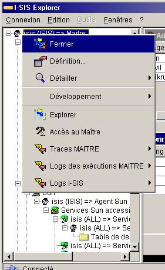

I-SIS Explorer

Guide d'utilisation
|
|
I-SIS Explorer |
|
|
Guide d'utilisation |
||
L'arbre d'exploration est une zone d'affichage permettant d'explorer le système d'information des services, et d'effectuer des actions sur ses différents objets.
Son but est d'afficher les chemins parcourus, ou explorés, sous forme hiérarchique. Ce mode d'affichage découle de la logique d'exploration : Il existe un et un seul point de départ, il peut exister un ou plusieurs points d'arrivée, et il peut exister un certain nombre de chemins pour relier ces points.
Cet arbre d'exploration permet également d'accéder à des informations complémentaires, et d'effectuer des actions sur des objets bien précis du système d'information des services. C'est pourquoi chaque nœud et chaque feuille dispose d'un menu contextuel qui lui est propre. Ce menu contextuel est disponible via un click droit sur le nœud concerné.

Le I-SIS Explorer ayant été conçu comme une structure dynamique, le comportement de l'arbre d'exploration (mode d'affichage, présence d'un menu contextuel...) est codé de manière générique au niveau de celui-ci.
A contrario, les informations affichées, les parcours disponibles, et les actions pouvant être effectuées proviennent des données transmises par les autres modules du logiciel I-SIS (I-SIS Portail, I-SIS Agent, mode d'emploi d'exploitation).
D'une certaine manière, les parcours et les données de l'exploration sont "découvertes" au moment de la construction de ce menu.
Copyright © 2003 BV Associates. Tous droits réservés.